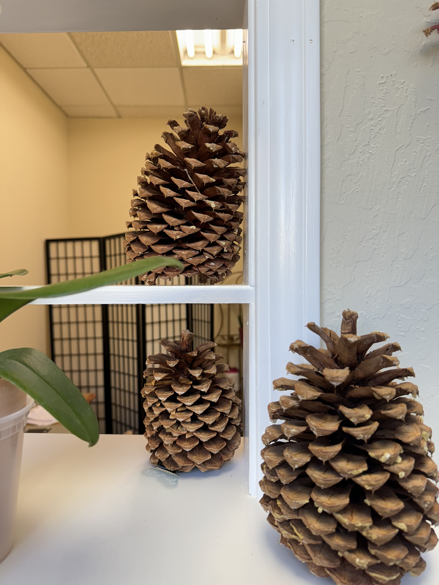
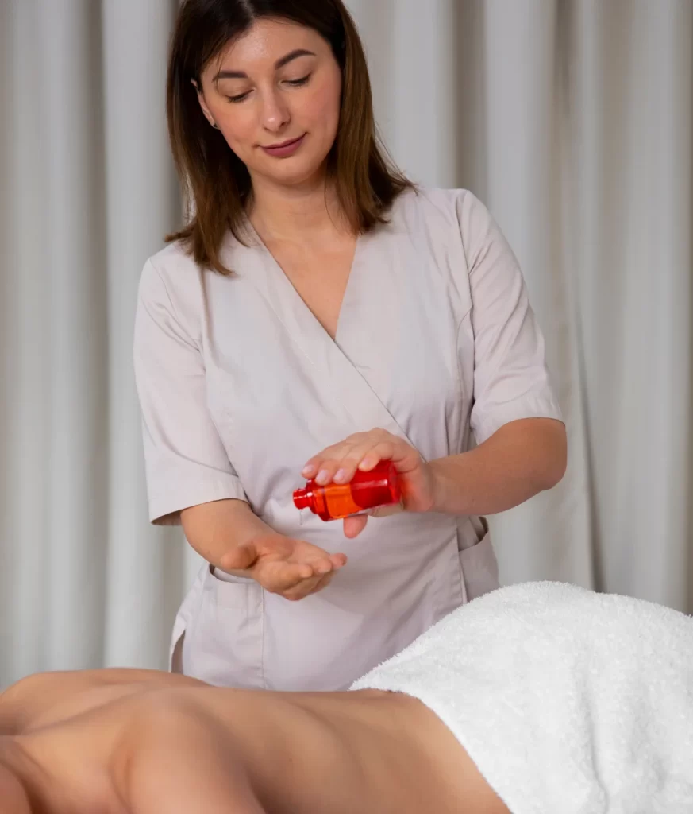

Our Story
Broadway Therapeutic Massage began with a simple goal: to bring relief and relaxation to the East Bay community through expert massage therapy. Founded by a team of certified therapists with over a decade of experience, we are passionate about helping clients overcome muscle pain and achieve a renewed sense of well-being. Our journey is rooted in a commitment to personalized care, and we take pride in the trust our clients have placed in us over the years.

